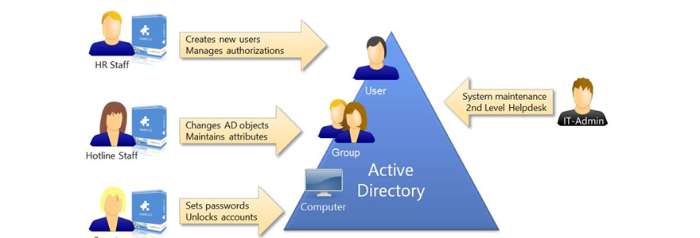

Mission - Les bonnes pratiques de sécuritées pour l'active directory.
Lors de mon stage à l'ADSN j'ai eu pour mission de prendre connaissance des bonnes pratiques a prendre afin de rédiger un document indiquant ces bonnes pratiques. Ce document devait être à destination des administrateurs de l'ADSN afin de leurs permettre de mettre en place la sécuritées la plus optimale possible.
Qu'est ce que l'AD et les bonnes pratiques
L'Active Directory (AD) est au cœur de la gestion des identités et des accès dans de nombreuses entreprises. En tant que composant essentiel de l'infrastructure informatique, il est crucial de maintenir un niveau élevé de sécurité pour garantir la protection des données sensibles et la continuité des opérations. Dans cet article, nous allons explorer les bonnes pratiques de sécurité pour l'Active Directory, afin de renforcer la résilience de votre réseau et de prévenir les risques potentiels.
1.Segmentation du Réseau et Isolation de l'AD : La première étape vers une sécurité accrue de l'Active Directory est la segmentation du réseau. Isoler l'AD du reste du réseau limite la surface d'attaque en cas de violation. Utilisez des pare-feux et des sous-réseaux pour empêcher les accès non autorisés.
2. Mises à Jour Régulières et Correctifs de Sécurité : Assurez-vous que toutes les machines dans l'environnement AD sont à jour avec les derniers correctifs de sécurité. Cela réduit considérablement les vulnérabilités exploitables par les attaquants.
3. Complexité des Mots de Passe et Authentification Forte : Exigez des mots de passe complexes et imposez des politiques de renouvellement régulier. Encouragez l'utilisation de l'authentification à deux facteurs (2FA) pour renforcer la sécurité des connexions.
4. Contrôle d'Accès Basé sur les Rôles (RBAC) : Mettez en œuvre le contrôle d'accès basé sur les rôles pour attribuer des autorisations en fonction des responsabilités. Cela garantit que seules les personnes autorisées ont accès aux ressources nécessaires.
5. Surveillez et Auditez les Activités : La surveillance continue est essentielle pour détecter les comportements suspects. Activez les journaux d'audit de l'AD et analysez régulièrement les activités pour repérer toute anomalie.
6. Gestion Prudente des Comptes Privilégiés : Limitez le nombre de comptes administrateurs et attribuez des privilèges uniquement lorsque c'est nécessaire. Utilisez des comptes administrateurs dédiés et séparés pour éviter les compromis.
7. Plan de Reprise d'Activité (PRA) et Sauvegardes Régulières: Élaborez un plan de reprise d'activité pour l'AD en cas d'incident majeur. Effectuez des sauvegardes régulières de l'AD et testez périodiquement le processus de restauration.
8. Formation et Sensibilisation des Utilisateurs : Éduquez les utilisateurs sur les menaces potentielles telles que le phishing et les attaques par force brute. Un personnel conscient des risques est un atout précieux dans la protection de l'AD.
conclusion
La sécurité de l'Active Directory est un élément essentiel de la sécurité globale de l'entreprise. En suivant ces bonnes pratiques, vous pouvez renforcer la résilience de votre réseau et réduire considérablement les risques de violation de l'AD. La sécurité de l'AD est un processus continu qui nécessite une attention constante. En adoptant une approche proactive, vous pouvez protéger votre entreprise contre les menaces potentielles et garantir la continuité des opérations. Cette mission m'aura donc beaucoup apris car on retrouve une utilisation de l'AD dans de nombreuses entreprises.
